Instalações Elétricas - Ademaro A. M. B. Cotrim Capítulo 5 - Linhas elétricas
Prof. Dr. Thales A. C. Maia
UFMG - DEE
Aspectos gerais
Condutores elétricos - 1 parte
Os condutores elétricos são os principais componentes das linhas elétricas. Os componentes “elementares” são:
Fio: produto metálico maciço e flexível, de seção transversal invariável.
Condutor encordoado: fios dispostos helicoidalmente, conferindo maior flexibilidade. Pode ser compactado ou não.
Cabo: conjunto de fios encordoados, isolados ou não entre si, podendo o conjunto ser isolado ou não.
Corda: componente de um cabo, constituído por um conjunto de fios encordoados e não isolados.
Barra: condutor rígido, em forma de tubo ou perfilado, fornecido em trechos retilíneos.
Linha pré-fabricada: peças em tamanhos padronizados, com proteção mecânica (ex: barramentos blindados).
Barramento: conjunto de barras de mesma tensão nominal.
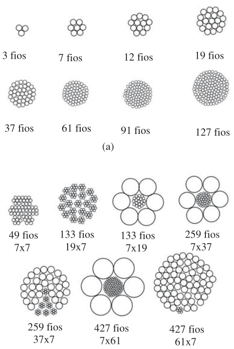
Fig. 1: Cabos com encordoamento simples (a) e composto (b). Os espaços vazios do terceiro ao último cabo de (b) são os mesmos da perna preenchida.
Condutores elétricos - Classe de encordoamento
A NBR NM 280 define seis classes de encordoamento para cobre:
Classe 1: sólidos (fios).
Classe 2: encordoados, compactados ou não.
Classe 3: encordoados não compactados.
Classes 4, 5 e 6: flexíveis, com graus de flexibilidade crescentes.
Condutores elétricos - 2 parte
Cabo: é o conjunto de fios encordoados, isolados ou não entre si, podendo o conjunto ser isolado ou não.
Corda: é um componente de um cabo, constituído por um conjunto de fios encordoados e não isolados entre si.
Coroa: conjunto de componentes ou de partes de componentes de um cabo, dispostos helicoidalmente e eqüidistantes de um centro de referência.
Alma: fio ou conjunto de fios que formam o núcleo central do cabo, para aumentar a sua resistência mecânica.
Cabos de potência: são os cabos usados para o transporte de energia elétrica em instalações de geração, transmissão, distribuição e utilização.
Cabos de controle: são utilizados nos circuitos de controle de sistemas e equipamentos.
Cabo revestido: é um cabo sem isolação ou cobertura, constituído por fios revestidos.
Isolação: é o conjunto dos materiais isolantes utilizados para isolar eletricamente.
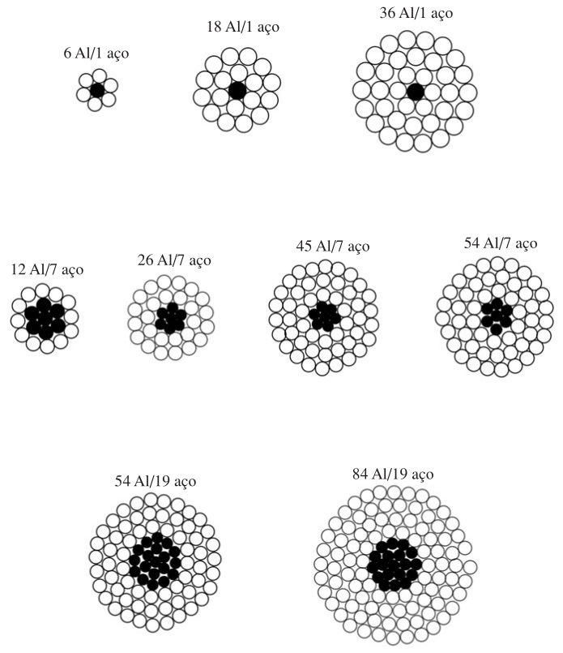
Fig. 2: Exemplo de cabos de alumínio com alma de aço (CAA).
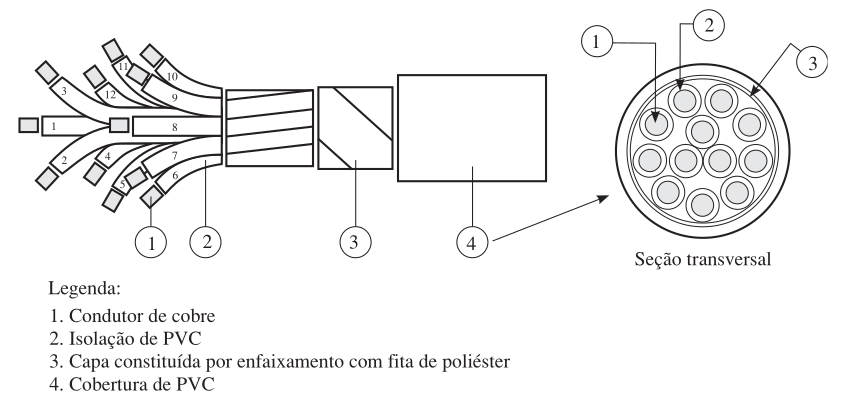
Fig. 3: Cabo de controle tipo Sintenax.
Condutores elétricos - 3 parte
Condutor isolado: o fio ou cabo dotado apenas de isolação, e esta pode ser constituída por uma ou mais camadas.
Cobertura: em um fio ou cabo é um invólucro externo não metálico e contínuo.
Fio nu: é um fio sem revestimento, isolação ou cobertura.
Cabo unipolar: é um cabo isolado dotado de cobertura\({}^{1}\).
Cabo multipolar: é constituído por dois ou mais cabos isolados e dotado, no mínimo, de cobertura\({}^{1}\).
Armação: é o elemento metálico de um cabo que o protege contra esforços mecânicos.
Acolchoamento: consiste no material não metálico que protege mecanicamente o componente situado sob a armação.
Cabo multiplexado: é um cabo formado por dois ou mais condutores isolados ou por cabos unipolares, dispostos helicoidalmente.
\({}^{1}\)Em ambos, a cobertura age como proteção da isolação.
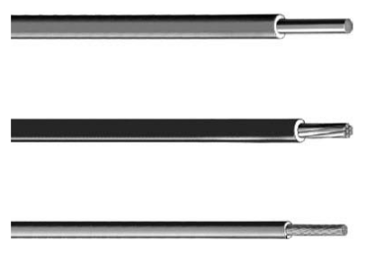
Fig. 4: Condutores isolados da linha Superastic cuja isolação é constituída por duas camadas de PVC, sendo a camada externa mais resistente à abrasão e bastante deslizante.
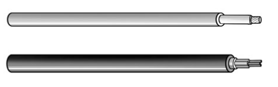
Fig. 5: Cabos uni e multipolar.
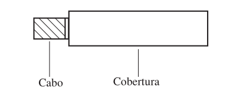
Fig. 6: Cabo coberto utilizado em redes aéreas de distribuição.
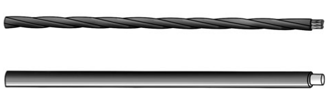
Fig. 7: Cabo multiplexado.
Condutores elétricos - 4 parte
Condutor setorial: é um condutor cuja seção transversal tem a forma aproximada de um setor de um círculo.
Cabo setorial: é um cabo multipolar cujas veias são condutores isolados setoriais.
Cordoalha: é um condutor com forma de tecido de fios metálicos.
Cordão: é um cabo flexível com reduzido número de condutores isolados.
Blindagem: é o envoltório condutor ou semicondutor, aplicado sobre o condutor ou sobre o condutor isolado.
Cabos secos: são cabos unipolares ou multipolares cuja isolação é constituída exclusivamente por material sólido.
Cabo sob pressão: é um cabo de potência cuja isolação é mantida sob pressão superior à pressão atmosférica.
Cabo concêntrico: é um cabo multipolar constituído por um condutor central isolado.
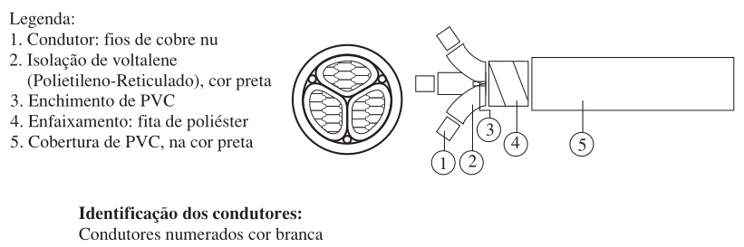
Fig. 8: Cabo tripolar setorial.
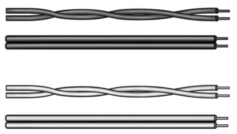
Fig. 9: Cordões.
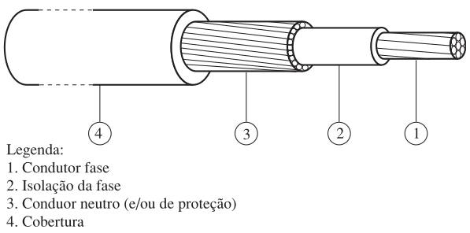
Fig. 10: Cabo concêntrico.
Aplicação dos cabos de potência
Condutores isolados: circuitos terminais, circuitos de distribuição e ligações internas de quadros de distribuição (principalmente os flexíveis).
Cabos unipolares: circuitos terminais e circuitos de distribuição.
Cabos multipolares: circuitos terminais, circuitos de distribuição e ligações de equipamentos móveis ou portáteis (os cabos flexíveis).
Cabos multiplexados: circuitos de distribuição e circuitos terminais (em certos casos).
Cordões: ligações de equipamentos móveis ou portáteis.
Temperaturas de Serviço
Regime permanente: temperatura máxima para serviço contínuo.
Sobrecarga: temperatura alcançada em regime de sobrecarga.
Curto-circuito: temperatura alcançada durante o período de curto-circuito.
Cobre versus Alumínio
Cobre: Mais usado, melhor condutividade, menos oxidação, maior eletropositividade (menos corrosão galvânica).
Alumínio: Mais leve (densidade menor), custo menor, ideal para linhas aéreas de transmissão/distribuição.
Resistência de um condutor: \[
R = \rho \frac{l}{S} ~ (\Omega)
\]
onde, \(\rho\) é a resistividade do material.
\[
\rho = R \frac{S}{l} ~ (\Omega \cdotp m \hspace{0.5em} \text{ou} \hspace{0.5em} \Omega \cdotp mm^2 / m)
\]
Variação da resistividade com a temperatura: \(\rho_2 = \rho_1 [1 + \alpha_1 (\theta_2 - \theta_1)]\)
A resistência em corrente alternada é aumentada pelos efeitos pelicular e de proximidade.
Resistência normativa – NBR NM 280
A norma define a resistência a 20°C, \(R_{20}\), considerando a geometria real do encordoamento (Expressão 5.7):
\(n\): número de fios do condutor; \(d\): diâmetro de cada fio (mm).
\(k_1\): depende do diâmetro do fio e do material (Tabela 5.3).
\(k_2\): depende da classe de encordoamento (Tabela 5.4).
\(k_3\): 1,00 (isolados, unipolares e multipolares não torcidos); 1,05 (multipolar flexível de cobre); 1,20 (multipolar de alumínio ou multipolar não flexível de cobre, torcidos).
Fatores \(k_1\) e \(k_2\) (resumo — NBR NM 280)
Tab. 1: Tabela 5.3 (resumida)
Diâmetro do fio (mm)
\(k_1\) maciço
\(k_1\) encordoado
até 0,31
–
1,04 – 1,07
0,31 – 3,60
1,03 – 1,05
1,02 – 1,04
acima de 3,60
1,03 – 1,04
–
Tab. 2: Tabela 5.4 (resumida)
Situação
\(k_2\) (Cu)
\(k_2\) (Al)
Condutores maciços
1,00
1,00
Encordoados cl. 2/3, fio > 0,6 mm
1,02
1,02
Encordoados cl. 4/5/6, fio > 0,6 mm
1,03
–
Encordoados, fio ≤ 0,6 mm
1,04
1,03
Correção pela temperatura
Tab. 3: Fatores de correção da temperatura (\(K_{\theta}\)) para condutores de cobre.
Temp. (°C)
Fator \(K_\theta\)
Temp. (°C)
Fator \(K_\theta\)
Temp. (°C)
Fator \(K_\theta\)
5
1,064
14
1,025
23
0,988
6
1,059
15
1,020
24
0,984
7
1,055
16
1,016
25
0,980
8
1,050
17
1,012
26
0,977
9
1,046
18
1,008
27
0,973
10
1,042
19
1,004
28
0,969
11
1,037
20
1,000
29
0,965
12
1,033
21
0,996
30
0,962
13
1,029
22
0,992
Nota: Os valores dos fatores de correção \(K_\theta\) estão baseados no coeficiente de temperatura de resistência de 0,004°C⁻¹ a 20°C.
Efeito pelicular e de proximidade
Em corrente alternada, a resistência efetiva \(R_{CA}\) é maior que a resistência em corrente contínua (\(R\)):
\[
R_{CA} = R + \Delta R \quad (\Omega/km), \qquad \Delta R = R(y_s + y_p)
\]
Efeito pelicular (\(y_s\)): o próprio campo magnético alternado, criado pela corrente dentro do condutor, induz correntes parasitas que se opõem à corrente no centro e a reforçam perto da superfície — por isso a densidade de corrente cresce da parte central para a periferia.
Efeito de proximidade (\(y_p\)): o campo magnético de um condutor vizinho (a outra fase, o neutro, o retorno) também induz correntes parasitas no condutor considerado, distorcendo ainda mais a distribuição de corrente na seção — dependendo do sentido das correntes, ela se concentra no lado mais próximo ou mais afastado do condutor vizinho.
Ambos crescem com a frequência e a seção do condutor — relevantes em alimentadores industriais de grande seção e alta corrente, e se agravam bastante na presença de harmônicas (cargas não lineares: inversores de frequência, retificadores).
\(f\): frequência (Hz); \(R\): resistência em corrente contínua (Ω/km, em serviço).
\(k_s\): fator experimental — a norma permite adotar \(k_s=1\) na maioria dos casos práticos.
Cresce com a quarta potência de \(x_s\), ou seja, com o quadrado da frequência — por isso o efeito é pequeno em 60 Hz, mas se torna significativo em cabos de grande seção ou na presença de harmônicas de corrente.
\(d_c\): diâmetro do condutor (mm); \(l\): distância entre eixos dos condutores do circuito (mm) — cuidado, aqui \(l\)não é o comprimento do cabo, apesar da mesma letra usada em outras fórmulas do capítulo.
\(k_p\): fator experimental, também tomado como \(k_p=1\) na prática.
Quanto mais próximos os condutores (maior \(d_c/l\)), maior o efeito — daí a importância do espaçamento ao agrupar condutores em paralelo por fase (seção “Instalação de condutores”).
Perdas por efeito Joule
\[
P_j = R_{CA} I_B^2 \quad (W/km)
\]
onde \(I_B\) é a corrente de projeto (de carga) que circula pelo condutor.
Em seções pequenas e frequência industrial (50/60 Hz), \(y_s\) e \(y_p\) são desprezíveis — mas tornam-se significativos em cabos de grande seção e em condutores em paralelo por fase, exigindo agrupamento e espaçamento adequados (ver seção sobre instalação de condutores).
Exemplo numérico completo, separando as duas contribuições, logo adiante.
Exemplo — Verificação de \(R_{20}\)
Condutor de cobre, seção nominal 2,5 mm², classe de encordoamento 2 (7 fios, não compactado, fios nus). Calcular \(R_{20}\) pela Expressão 5.7 e comparar com o valor tabelado (Tabela 5.8): 7,41 Ω/km.
Diâmetro de cada fio: 0.674 mm
R20 calculado: 7.18 Ω/km
R20 tabelado (Tabela 5.8, fios nus): 7,41 Ω/km
Diferença de cerca de 3% em relação ao valor tabelado — compatível com a margem de fabricação prevista na norma, já que a Tabela 5.8 fornece o valor máximo admissível.
Exemplo — Aplicação: perdas Joule em serviço
Considerando esse mesmo condutor operando a 70°C (isolação de PVC) e conduzindo uma corrente de projeto \(I_B = 18\) A, obter a resistência em serviço (\(R_u\), Expressão 5.8) e as perdas por efeito Joule (efeitos pelicular/proximidade desprezíveis nesta seção pequena).
Código
# Aplicação - Resistência em serviço (Expressão 5.8) e perdas Joule (Expressão 5.22)alpha20_Cu =0.004# °C⁻¹ (cobre, NBR NM 280)theta_u =70.0# °C (temperatura de serviço - isolação PVC)IB =18.0# A (corrente de projeto)Ru = R20 * (1+alpha20_Cu*(theta_u -20)) # Ω/kmPj = Ru * IB^2# W/kmprintln("Resistência a 70°C (Ru): ", round(Ru, digits=2), " Ω/km")println("Perdas por efeito Joule: ", round(Pj, digits=1), " W/km")
Resistência a 70°C (Ru): 8.61 Ω/km
Perdas por efeito Joule: 2789.6 W/km
Exemplo — Efeitos Pelicular e de Proximidade em um Alimentador
Alimentador industrial trifásico de grande corrente: cabo de cobre, 240 mm², classe 2, isolação XLPE/PVC (serviço a 70°C), instalado em trifólio (condutores se tocando), com \(I_B = 400\) A, ao longo de 500 m.
Parâmetro
Valor
Seção (\(S\))
240 mm²
\(R_{20}\) (Tabela 5.8, fios nus)
0,0754 Ω/km
Diâmetro do condutor (\(d_c\))
≈ 17,5 mm (idealizado, circular)
Distância entre eixos (\(l\))
22 mm (trifólio)
Corrente de projeto (\(I_B\))
400 A
Comprimento
500 m
Código
# Exemplo — Efeitos pelicular e de proximidade em um alimentador industrial# Cabo de cobre, 240 mm², classe 2 (encordoado), instalado em trifólio (condutores# se tocando) com outros 2 condutores do mesmo circuito (ida/retorno de um# alimentador trifásico de grande corrente).S =240.0# mm² (seção nominal)R20 =0.0754# Ω/km (Tabela 5.8, cobre, classe 2, fios nus)alpha20 =0.004# °C⁻¹ (cobre, NBR NM 280)theta_u =70.0# °C (temperatura de serviço, isolação XLPE/PVC)f =60.0# Hz (frequência industrial no Brasil)IB =400.0# A (corrente de projeto do alimentador)comprimento_km =0.5# km (500 m de linha)ks =1.0# valor experimental, tomado igual à unidade (o próprio livro permite)kp =1.0dc =sqrt(4*S/pi) # mm -- diâmetro equivalente do condutor (idealizado, circular)l =22.0# mm -- distância entre eixos dos condutores (trifólio, tocando-se)# Resistência em serviço (Expressão 5.8, já usada antes) --------------------Ru = R20 * (1+alpha20*(theta_u -20)) # Ω/km# Efeito pelicular (Expressões 5.18/5.19) ------------------------------------xs =sqrt(8*pi*f/Ru *1e-4* ks)ys = xs^4/ (192+0.8*xs^4)# Efeito de proximidade (Expressões 5.20/5.21) -------------------------------xp =sqrt(8*pi*f/Ru *1e-4* kp)yp = (xp^4/(192+0.8*xp^4)) * (dc/l)^2* (0.312*(dc/l)^2+1.18/(xp^4/(192+0.8*xp^4) +0.27))# Resistência em corrente alternada e perdas Joule (Expressões 5.16/5.17/5.22)DeltaR = Ru * (ys + yp)RCA = Ru + DeltaRPj_km = RCA * IB^2# W/kmPj_tot = Pj_km * comprimento_km # W, para os 500 m da linhaprintln("Dados do condutor:")println(rpad(" dc = $(round(dc, digits=1)) mm", 26), "l = $(l) mm (dc/l = $(round(dc/l, digits=2)))")println(rpad(" Ru (70°C) = $(round(Ru, digits=4)) Ω/km", 26), "IB = $(IB) A")println()println("Efeitos em corrente alternada (f = $(f) Hz):")println(rpad(" y_s = $(round(100*ys, digits=2))%", 26), "y_p = $(round(100*yp, digits=2))%")println(rpad(" R_CA = $(round(RCA, digits=4)) Ω/km", 26), "aumento = $(round(100*DeltaR/Ru, digits=1))%")println()println("Perdas por efeito Joule:")println(rpad(" Pj = $(round(Pj_km, digits=0)) W/km", 26), "Pj (500 m) = $(round(Pj_tot, digits=0)) W")
Dados do condutor:
dc = 17.5 mm l = 22.0 mm (dc/l = 0.79)
Ru (70°C) = 0.0905 Ω/km IB = 400.0 A
Efeitos em corrente alternada (f = 60.0 Hz):
y_s = 1.43% y_p = 3.93%
R_CA = 0.0953 Ω/km aumento = 5.4%
Perdas por efeito Joule:
Pj = 15252.0 W/km Pj (500 m) = 7626.0 W
Efeito da Frequência (Harmônicas)
Para a mesma geometria, variando \(f\) — cargas industriais não lineares (inversores de frequência, retificadores) que injetam harmônicas de corrente.
Código
usingPlots# Mesmo condutor do exemplo anterior (240 mm², trifólio), variando só a frequência# -- útil para visualizar o impacto de harmônicas de corrente em cargas industriais# (retificadores, inversores de frequência) além da fundamental de 60 Hz.Ru =0.0905# Ω/km (resistência em serviço, 70°C, já calculada antes)dc_l =0.79# dc/l do exemplo (trifólio)ks =1.0kp =1.0freqs =range(1, 780, length=400) # até a 13ª harmônica de 60 Hzfunctiony_s(f) xs =sqrt(8*pi*f/Ru *1e-4* ks)return xs^4/ (192+0.8*xs^4)endfunctiony_p(f) xp =sqrt(8*pi*f/Ru *1e-4* kp) base = xp^4/(192+0.8*xp^4)return base * dc_l^2* (0.312*dc_l^2+1.18/(base +0.27))endys_vals =y_s.(freqs)yp_vals =y_p.(freqs)total_vals = ys_vals .+ yp_valsplt =plot(freqs, 100.* ys_vals, label="Efeito pelicular (yₛ)", linewidth=2, xlabel="Frequência (Hz)", ylabel="Aumento da resistência (%)", legend=:topleft, size=(560, 360),)plot!(plt, freqs, 100.* yp_vals, label="Efeito de proximidade (yₚ)", linewidth=2)plot!(plt, freqs, 100.* total_vals, label="Total (yₛ+yₚ)", linewidth=2, linestyle=:dash, color=:black)vline!(plt, [60], label="60 Hz (fundamental)", linestyle=:dot, color=:gray)println("y_s(60Hz)=", round(100*y_s(60), digits=2), "% y_p(60Hz)=", round(100*y_p(60), digits=2), "%")println("y_s(300Hz)=", round(100*y_s(300), digits=2), "% y_p(300Hz)=", round(100*y_p(300), digits=2), "% (5ª harmônica)")println("y_s(780Hz)=", round(100*y_s(780), digits=2), "% y_p(780Hz)=", round(100*y_p(780), digits=2), "% (13ª harmônica)")display(plt)
Fig. 11: Efeitos pelicular (\(y_s\)) e de proximidade (\(y_p\)) no aumento de \(R_{CA}\), em função da frequência – cabo de 240 mm², dc/l = 0,79.
Reatância Indutiva
A indutância (\(L\)) e a reatância (\(X_L\)) dependem da distância entre os condutores:
\[
L = k + 0,46 \log \frac{2S_M}{d_c} \quad (mH/km)
\]
\[
X_L = 2\pi f L \times 10^{-3} \quad (\Omega/km)
\]
Isolações
Gradiente e Rigidez Dielétrica
A isolação é o material dielétrico que separa o condutor do meio, suportando a diferença de potencial entre eles.
Gradiente de potencial: A variação do campo elétrico no dielétrico. A rigidez dielétrica é crucial na escolha do material.
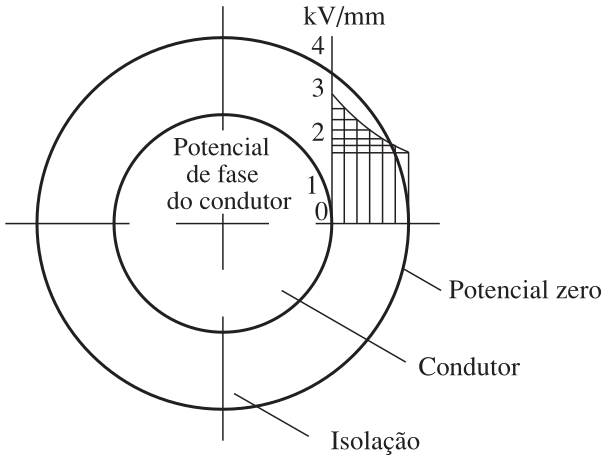
Fig. 12: Gradiente de potencial no dielétrico.
Materiais Utilizados
Podem ser estratificados (papel impregnado a óleo) ou sólidos (termoplásticos e termofixos).
Papel impregnado: ainda utilizado, principalmente, em cabos de média e de alta tensão.
Cabo OF (oil-filled): cabo a óleo mineral fluido submetido a uma baixa pressão.
Isolantes sólidos: são, hoje em dia, os mais utilizados nos cabos de baixa e de média tensão.
Características comuns dos isolantes sólidos
Homogeneidade da isolação e boa resistência ao envelhecimento em serviço.
Ausência de escoamento.
Reduzida sensibilidade à umidade.
Insensibilidade às vibrações.
Bom comportamento ao fogo.
Cloreto de Polivinila (PVC)
Composição: mistura de cloreto de polivinila puro (polímero) com plastificantes, estabilizantes e cargas. Termoplástico.
Rigidez dielétrica: elevada.
Perdas dielétricas: elevadas.
Estabilidade química: considerável.
Fogo: transmite mal o fogo.
Envelhecimento térmico: pode ser eficazmente combatido com estabilizantes.
Coloração: facilmente colorido com cores vivas.
Aplicação: ótimo isolante para cabos de potência em BT e MT (até 10 kV).
Borracha Etileno-Propileno (EPR)
Reticulação: compostos de EPR são, em geral, reticulados por meio de peróxidos orgânicos (termofixo).
Flexibilidade: muito grande.
Descargas e radiações ionizantes: resistência excepcional.
Ângulo de perdas: bastante baixo.
Deformação térmica: boa resistência.
Umidade: absorção razoável.
Envelhecimento térmico: bom comportamento.
Rigidez dielétrica: baixa dispersão.
Conclusão: ótimo isolante sólido.
Polietileno Reticulado (XLPE)
Reticulação: a reticulação química do polietileno torna-o termofixo, adequado à construção de isolações de cabos.
Deformação térmica: resistente (suporta até 250 °C no curto-circuito).
Fissuração (stress cracking): a reticulação faz desaparecer por completo essa tendência.
Baixas temperaturas: a reticulação não modifica sensivelmente o bom comportamento do polietileno.
Cargas minerais e orgânicas: a reticulação permite a incorporação, melhorando o comportamento mecânico.
Aplicação: cabos de baixa e de média tensão.
Blindagens
Blindagens
Sobre o condutor (interna): Torna o campo elétrico uniforme, evitando ionizações localizadas e depreciação.
Sobre a isolação: Distribui uniformemente o campo radial dentro do cabo isolado.
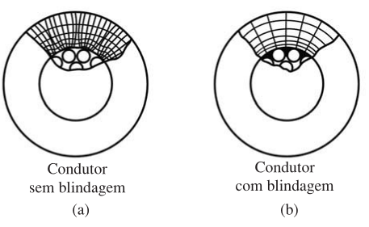
Fig. 13: Campo elétrico do condutor (a) sem blindagem e (b) com blindagem.
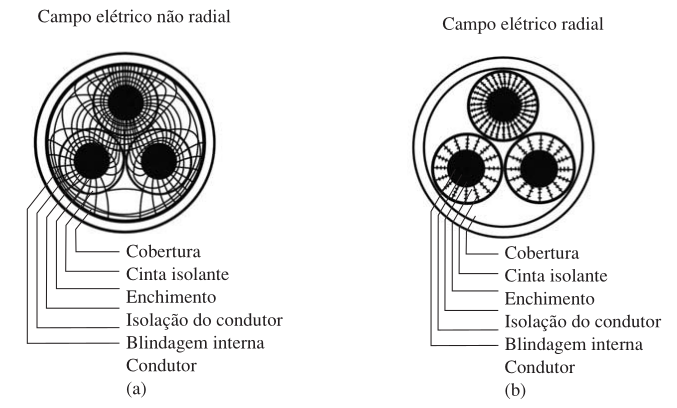
Fig. 14: Blindagem sobre a isolação.
Nos cabos secos, a camada condutora é constituída por fitas ou fios de cobre e fornece um caminho de baixa impedância para a condução das correntes induzidas provenientes das correntes de curto-circuito de outros cabos.
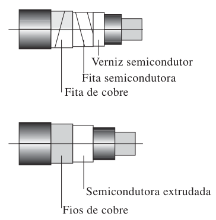
Fig. 15: Cabos blindados.
Proteção
Proteções
Não Metálicas: Cobertura externa contra sol, chuva e produtos químicos (geralmente PVC, neoprene).
Metálicas: Armações (fita de aço) aplicadas para resistir a danos mecânicos e esforço de tração.
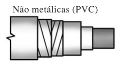
Fig. 16: Proteção não metálica.
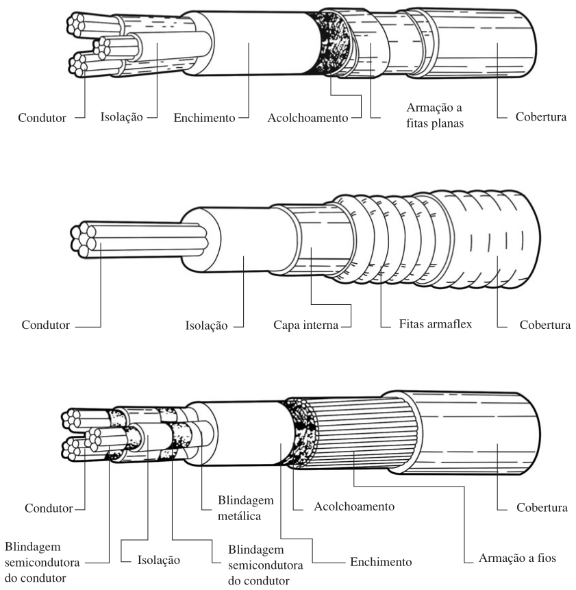
Fig. 17: Proteções metálicas dos cabos.
Níveis de isolamento de tensão
Tensão de isolamento
A escolha da tensão de isolamento (\(V_0/V\)) depende da categoria do sistema (como ele aterra seu neutro):
Categoria 1: Sistemas que eliminam a falta terra rapidamente (máximo 1h).
Categoria 2: Sistemas que operam mais tempo em condição de falta fase-terra, submetendo as fases não afetadas a sobretensões maiores (\(U \times \sqrt{3}\)).
Tabela 5.19 — Tensão de isolamento do cabo (\(V_0\))
Tab. 4: Tabela 5.19 — NBR 6251
Tensão nominal (kV)
Tensão máx. de operação (kV)
\(V_0\) Categoria 1 (kV)
\(V_0\) Categoria 2 (kV)
1
1,2
–
0,6
3
3,6
–
1,8
6
7,2
3,6
6
10
12,0
6
8,7
15
17,5
8,7
12
20
24,0
12
15
25
30,0
15
20
35
42,0
20
27
Níveis de isolamento americanos (ICEA/AEIC)
Nível 100% (NA): faltas fase-terra eliminadas em até 1 minuto — sistemas com neutro diretamente aterrado.
Nível 133% (NI): desligamento em 1 minuto não garantido, mas eliminação provável em até 1 hora — neutro isolado ou aterrado por impedância.
Nível 173%: tempo de desligamento indefinido.
A Categoria 1 da NBR 6251 engloba os níveis 100% e 133% (NA e NI).
Equivalência de classes de tensão — Tabela 5.20
Tab. 5: Tabela 5.20 — Equivalência entre classificações
Normas americanas (kV)
NBR 6251 (kV)
0,6
0,6/1
3
1,8/3
5
3,6/6
8 NI
6/10
15 NA
8,7/15
15 NI
12/20
25 NA
15/25
25 NI
20/35
35 NA
20/35
35 NI
27/35
Perdas dielétricas
Parcela resistiva e capacitiva
Ocorrem nos cabos energizados em AC.
A corrente \(I\) que flui pelo dielétrico é composta por duas parcelas:
Ativa (perdas)
Puramente reativa (capacitiva)
\[
I = \sqrt{I_p^2 + I_c^2}
\]
\(I_p\): corrente em fase com a tensão fase-terra \(V_0\), responsável pelas perdas.
\(I_c\): corrente que flui pelo capacitor equivalente (adiantada 90° em relação a \(U_0\)).
Fig. 19: Eletrocalha com paredes perfuradas e tampa removível encaixada.
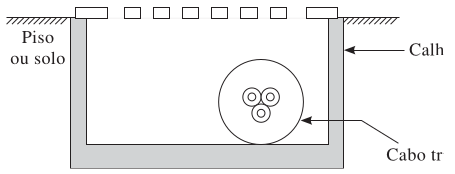
Fig. 20: Corte de uma canaleta (com tampa) ventilada.
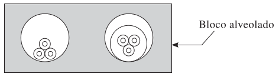
Fig. 21: Corte de um bloco alveolado com dois furos
Conexões — Aspectos gerais
A NBR 5410 exige que as conexões entre condutores, e destes com equipamentos, assegurem contatos firmes e duráveis, sejam inspecionáveis e estejam protegidas mecanicamente (caixas, quadros, canaletas etc.).
Devem suportar os esforços de correntes nominais e de curto-circuito previstos pelos dispositivos de proteção do circuito.
Não podem sofrer modificações inadmissíveis por aquecimento, envelhecimento do isolante ou vibrações em serviço normal.
A pressão de contato não deve depender do material isolante.
Exceto em linhas aéreas ou de contato para equipamentos móveis, não podem ficar sujeitas a esforços de tração ou de torção.
Soldagem, contato a pressão e conectores
As conexões devem ser feitas por soldagem ou por contato a pressão (conectores prensados).
É proibida a solda a estanho na terminação de condutores para ligá-los a bornes ou terminais de dispositivos e equipamentos.
Uso de solda em condutores/cabos com isolação termofixa limita a temperatura de curto-circuito a 160°C.
Conexões prensadas devem ser feitas com ferramentas adequadas ao tipo e ao tamanho do conector, conforme recomendação do fabricante.
Conexões de condutores de alumínio
A conexão direta ao alumínio só é admitida com meios de conexão específicos para esse metal.
Na falta desses meios, o condutor de alumínio deve ser emendado a um trecho de cobre por meio de conector especial.
Conexões por parafuso: a pressão de contato é assegurada pelo controle de torque durante o aperto (valor definido pelo fabricante do conector ou do equipamento).
Em condutores de alumínio, só são admitidas emendas por conectores de compressão ou solda adequada — nunca solda a estanho.
A conexão entre cobre e alumínio deve ser feita exclusivamente com conectores bimetálicos.
Condições gerais de instalação
Influências externas: a proteção do tipo de linha instalada deve ser assegurada de maneira contínua ao longo de todo o percurso.
Extremidades: nos pontos de entrada em equipamentos, a proteção deve se manter contínua, com estanqueidade se necessário.
Travessias de paredes e pisos: proteção mecânica adequada; cuidado especial com condensação em travessias entre ambientes de umidade distinta.
Proximidade de outras canalizações
Distância mínima de 3 cm entre linhas elétricas e canalizações não elétricas (não se aplica a linhas embutidas).
Evitar proximidade com canalizações de calefação, ar quente ou dutos de exaustão de fumaça; nunca utilizar dutos de fumaça/ventilação para conter condutores.
Linhas de baixa tensão e linhas com tensões acima de 1.000 V não devem compartilhar as mesmas canaletas ou poços, salvo precauções contra energização cruzada em caso de defeito.
Faixas de tensão — Tabela 5.26
Circuitos das faixas I e II não devem compartilhar a mesma linha elétrica — a menos que todos os condutores sejam isolados para a tensão mais elevada presente, ou que sejam usados compartimentos/condutos fechados separados. Regra especialmente relevante para não misturar BT e MT no mesmo eletroduto ou canaleta.
Tab. 6: Tabela 5.26 (resumida, valores em corrente alternada — ver norma para corrente contínua)
Faixa
Aterrado — fase/terra (CA)
Aterrado — entre fases (CA)
Não aterrado — entre fases (CA)
I
U ≤ 50 V
U ≤ 50 V
U ≤ 50 V
II
50 < U ≤ 600 V
50 < U ≤ 1.000 V
50 < U ≤ 1.000 V
Instalação de condutores — múltiplos circuitos
Cabos multipolares só devem conter os condutores de um único circuito (e, se for o caso, o respectivo condutor de proteção).
Em condutos fechados (eletrodutos, eletrocalhas, blocos alveolados etc.), condutores de mais de um circuito são admitidos se:
Os circuitos pertencerem à mesma instalação, originando-se do mesmo dispositivo geral de manobra e proteção, sem transformação de corrente entre eles; e
As seções dos condutores de fase estiverem contidas em um intervalo de até 3 valores normalizados sucessivos (ex.: 2,5, 4 e 6 mm²); e
Todos os condutores tiverem a mesma temperatura máxima de serviço contínuo e forem isolados para a tensão nominal mais alta presente;
Ou, alternativamente, forem circuitos de força, comando e/ou sinalização de um mesmo equipamento.
Condutores em paralelo por fase
Procedimento relevante em alimentadores industriais de alta corrente: os condutores em paralelo devem ser reunidos em tantos grupos quantos forem os condutores por fase, cada grupo contendo um condutor de cada fase, instalados nas proximidades imediatas uns dos outros.
Objetivo: reduzir a reatância indutiva do circuito e a impedância do percurso de falta.
Exemplo (circuito trifásico com neutro e PE, 3 condutores por fase): usar 3 eletrodutos, cada um contendo uma fase, um neutro e um condutor de proteção — solução menos econômica, porém termicamente melhor que reunir os 9 condutores de fase mais neutro e PE em um único eletroduto (efeito térmico mais acentuado).
Eletrodutos - Part 1
A função principal de um eletroduto é conter o caminho da fiação elétrica e proteger os condutores contra certas influências externas (como choques mecânicos).
Materiais de Fabricação:
Metálicos: Geralmente de aço-carbono, são resistentes à corrosão (galvanizados, zincados ou esmaltados).
Isolantes: Geralmente em PVC ou polietileno. Os de PVC são os mais utilizados no Brasil.
Eletrodutos metálicos rígidos:
NBR 5597: tipos pesado e extra.
NBR 5598: um único tipo, de paredes mais grossas.
Destinados, em princípio, a instalações industriais e análogas.
Eletrodutos - Part 2
Classificação (Rígidos ou Isolantes):
Rígido: não pode ser curvado a não ser com ajuda mecânica.
Curvável: pode ser curvado com a mão, usando uma força razoável.
Transversalmente elástico: curvável; deformado sob força transversal, retoma a forma original logo após.
Flexível: metálico ou isolante, curvado com força reduzida, destinado a ser freqüentemente dobrado.
Ocupação de Eletrodutos e Instalações
Ocupação Máxima: Apenas \(53\%\) da área útil para 1 cabo, \(31\%\) para 2 cabos, e \(40\%\) para 3 ou mais.
Trechos Contínuos: Até 15m (internos) e 30m (externos) se retilíneos. Subtrair 3m para cada curva de 90°.
Caixas de Derivação: Obrigatórias em pontos de entrada/saída, emendas, derivações ou para dividir a tubulação.
Cálculo da Ocupação de um Eletroduto
A área útil (\(A_E\)) de um eletroduto: \[ A_E = \frac{\pi}{4}(d_e - 2e)^2 \quad (\text{mm}^2) \] onde \(d_e\) é o diâmetro externo e \(e\) a espessura.
A área total de um condutor/cabo isolado (\(A_c\)): \[ A_c = \frac{\pi}{4}d^2 \quad (\text{mm}^2) \]
O número máximo (\(N\)) de condutores iguais (para 3 ou mais): \[ N = \frac{0,4 A_E}{A_c} \]
Exemplo
Queremos instalar condutores isolados de 2,5 mm² (diâmetro \(d = 3,7\) mm) em um eletroduto de aço carbono tamanho 20 (\(d_e = 26,5\) mm e \(e = 2,25\) mm). Quantos condutores cabem no eletroduto?
Código
# Dados do Exemplo 1d =3.7# diâmetro do condutor isolado (mm)de =26.5# diâmetro externo do eletroduto (mm)e=2.25# espessura do eletroduto (mm)# Cálculo das áreasAc = (pi/4) * d^2Ae = (pi/4) * (de -2*e)^2# Cálculo do número de cabos (ocupação de 40%)N = (0.4* Ae) / Acprintln("Área útil do eletroduto (Ae): ", round(Ae, digits=2), " mm²")println("Área do condutor (Ac): ", round(Ac, digits=2), " mm²")println("O número máximo de condutores é: ", floor(Int, N))
Área útil do eletroduto (Ae): 380.13 mm²
Área do condutor (Ac): 10.75 mm²
O número máximo de condutores é: 14
Exemplo 2
Devemos instalar três circuitos em um mesmo eletroduto rígido de PVC:
Circuito 1: 3 condutores de 2,5 mm² (d = 3,7 mm).
Circuito 2: 3 condutores de 4 mm² (d = 4,2 mm).
Circuito 3: 4 condutores de 6 mm² (d = 4,8 mm).
Qual a área mínima útil necessária para esse eletroduto?
Código
# Dados do Exemplo 2 c1_qtd, c1_d =3, 3.7 c2_qtd, c2_d =3, 4.2 c3_qtd, c3_d =4, 4.8# Cálculo das áreas de cada circuito Ac1 = c1_qtd * (pi/4) * c1_d^2 Ac2 = c2_qtd * (pi/4) * c2_d^2 Ac3 = c3_qtd * (pi/4) * c3_d^2 Ac_total = Ac1 + Ac2 + Ac3# Área útil exigida (ocupação máxima de 40% para 3 ou mais condutores) Ae_min = Ac_total /0.4println("Área total dos condutores (Ac): ", round(Ac_total, digits=2), " mm²")println("A área mínima útil do eletroduto deve ser de: ", round(Ae_min, digits=2)," mm²")
Área total dos condutores (Ac): 146.2 mm²
A área mínima útil do eletroduto deve ser de: 365.5 mm²
Com base nessa área, escolhemos nas tabelas comerciais o eletroduto cujo tamanho atenda esse requisito.
Molduras, eletrocalhas e blocos alveolados
Condutos para instalação aparente — não podem ser embutidos nem cobertos por qualquer material (papel de parede, tecido etc.).
Molduras: só admitem condutores isolados (caso mais comum) ou cabos unipolares; cada ranhura só pode conter condutores/cabos de um mesmo circuito.
Eletrocalhas: admitem condutores isolados e cabos uni e multipolares.
Blocos alveolados: condutores instalados por puxamento — recomenda-se cabos uni/multipolares, devido às irregularidades internas (paredes e junções dos blocos).
Ocupação: embora a NBR 5410 não fixe uma área máxima para eletrocalhas e blocos alveolados, recomenda-se que não seja superior a 40% da área útil.
Perfilados
Nos perfilados, podem ser instalados condutores isolados, cabos unipolares e multipolares.
Atenção: O uso de condutores isolados em perfilados abertos, perfurados ou sem tampa só é admitido se:
Estiverem instalados em locais só acessíveis a pessoas advertidas (BA4) ou qualificadas (BA5).
Ou instalados a uma altura mínima de 2,50 m do piso.
Exemplos de Tipos de Linhas
Tab. 7: Tipos de linhas elétricas (maneira de instalar).
Nº
Esquema Ilustrativo
Descrição
Método Ref.
1
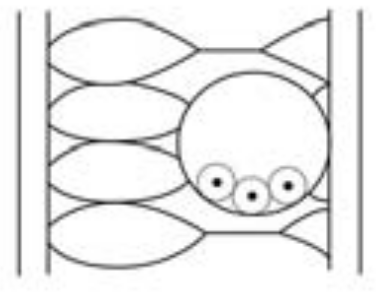
Condutores isolados unipolares em eletroduto circular embutido em parede termicamente isolante.
A1
12
Cabos unipolares ou cabo multipolar em bandeja não perfurada, perfilado ou prateleira.
C
21
Cabos unipolares ou multipolares em espaço de construção.
B1/B2
52
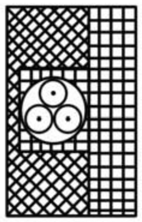
Cabos unipolares/multipolar embutido(s) diretamente em alvenaria sem proteção adicional.
C
Linhas Subterrâneas e em Canaletas
Cabos enterrados: A NBR 5410 admite, em linhas enterradas (cabos diretamente enterrados ou em eletrodutos enterrados), somente cabos unipolares ou multipolares.
Em linhas com cabos diretamente enterrados sem proteção mecânica adicional, só são admitidos cabos armados.
Condutores isolados em eletroduto enterrado só são admitidos se, no trecho enterrado, não houver nenhuma caixa de passagem e/ou derivação enterrada e for garantida a estanqueidade do eletroduto.
Profundidades mínimas:
\(0,70\) m em terreno normal;
\(1,00\) m na travessia de vias acessíveis a veículos (e com \(0,50\) m de largura disponível).
Afastamento mínimo de 0,20 m entre duas linhas elétricas enterradas que venham a se cruzar, e entre uma linha elétrica enterrada e qualquer linha não elétrica cujo percurso se avizinhe ou cruze com o da linha elétrica.
Bandejas, leitos e escadas para cabos
Recomendam-se cabos unipolares e multipolares (também se admitem condutores isolados com isolação de XLPE, conforme a NBR 7283, dada a maior espessura da isolação).
Recomenda-se disposição em camada única, embora múltiplas camadas sejam admitidas, desde que reduzida a possibilidade de propagação de incêndio entre os cabos.
Limite do volume de material combustível (isolação + cobertura) por metro linear de linha:
7 dm³/m — cabos categoria A ou A F/R (NBR NM IEC 60332-3-22 e 3-21).
3,5 dm³/m — categoria B (NBR NM IEC 60332-3-23).
1,5 dm³/m — categoria C (NBR NM IEC 60332-3-24).
Exemplo — Volume de material combustível
Cabo unipolar categoria A, seção 50 mm², isolação e cobertura de PVC: diâmetro do condutor \(d_c = 8,05\) mm; diâmetro externo \(d = 14\) mm.
Volume de material combustível (isolação + cobertura) por metro linear:
Quantos cabos desse tipo podem ser agrupados, considerando apenas as condições de propagação de fogo (limite de 7 dm³/m, categoria A)?
Código
# Exemplo - Volume de material combustível por metro linear (NBR NM IEC 60332-3)dc =8.05# mm (diâmetro do condutor)d =14.0# mm (diâmetro externo do cabo)# Área da coroa (isolação + cobertura), convertida de mm² para dm³ por metroV = (pi/4) * (d^2- dc^2) *1e-3# dm³/mlimite_A =7.0# dm³/m (categoria A)n_cabos =round(Int, limite_A / V)println("Volume de material combustível: ", round(V, digits=3), " dm³/m")println("Número máximo de cabos agrupados (categoria A): ", n_cabos)
Volume de material combustível: 0.103 dm³/m
Número máximo de cabos agrupados (categoria A): 68
Resultado compatível com o valor de referência do livro (0,103 dm³/m → 68 cabos). Como o próprio autor observa, essa quantidade não é uma solução adequada do ponto de vista da capacidade de condução de corrente — o limite de material combustível costuma ser menos restritivo que o limite térmico.
Linhas sobre isoladores
Podem ser usados condutores nus, condutores isolados (inclusive em feixe), cabos uni e multipolares, e barras — estas últimas restritas a locais de serviço elétrico.
Uso proibido em locais de habitação.
Em locais comerciais ou análogos: só se admitem condutores nus em extrabaixa tensão (ex.: alimentação de lâmpadas ou equipamentos móveis).
Em locais industriais, condutores nus montados sobre isoladores só são admitidos em locais de serviço elétrico e em utilizações específicas — destacando-se as pontes rolantes, aplicação direta e recorrente em sistemas elétricos industriais.
Referências
COTRIM, Ademaro A. M. B. Instalações Elétricas. 5ª Edição. São Paulo: Pearson Prentice Hall, 2009.
Exercícios
Exercício 1
Qual a diferença entre condutor elétrico e fio elétrico?
Condutor elétrico é um termo genérico para designar o produto que transporta energia (fios, cabos, barramentos).
Fio é especificamente o produto metálico maciço e flexível, de seção transversal invariável.
Exercício 2
Quais as seis classes de encordoamento dos condutores de cobre?
Classe 1: condutores sólidos (fios).
Classe 2: condutores encordoados, compactados ou não.
Classe 3: condutores encordoados não compactados.
Classes 4, 5 e 6: condutores flexíveis com graus de flexibilidade crescentes.
Obs.: para condutores de alumínio, a NBR NM 280 indica as classes 1, 2, 3, B, C e D, que também diferem entre si pelo grau de flexibilidade.
Exercício 3
O que são cabos de potência?
São os cabos utilizados no transporte de energia elétrica em instalações de geração, transmissão, distribuição e utilização.
Exercício 4
O que é isolação de um cabo elétrico?
É o conjunto de materiais isolantes utilizados para isolar o condutor eletricamente do ambiente que o circunda e de outros condutores.
Exercício 5
Quais as três temperaturas que caracterizam um cabo de potência?
Temperatura em regime permanente (serviço contínuo).
Temperatura em regime de sobrecarga.
Temperatura em regime de curto-circuito.
Exercício 6
Qual expressão permite calcular a variação da resistividade em função da mudança de temperatura?
Quais efeitos devem ser considerados para corrigir a resistência em corrente alternada?
Devem ser considerados o efeito pelicular (Skin) e o efeito de proximidade, que aumentam a resistência aparente do cabo.
Exercício 8
Qual expressão permite calcular a reatância indutiva \(X_L\) de um condutor?
\(X_L = 2\pi f L \times 10^{-3} (\Omega/\text{km})\),
onde \(L = k + 0,46 \log(2S_M / d_c)\) em mH/km.
Exercício 9
Qual a principal finalidade da blindagem de um cabo?
A blindagem garante que o campo elétrico no isolante seja radial e uniformemente distribuído, eliminando concentrações de esforço elétrico e ionizações localizadas que depreciam o cabo.
Exercício 10
Quais os principais tipos de condutos elétricos utilizados?
![]()
%60.png)
%60.png)